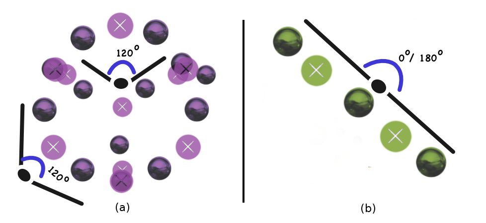
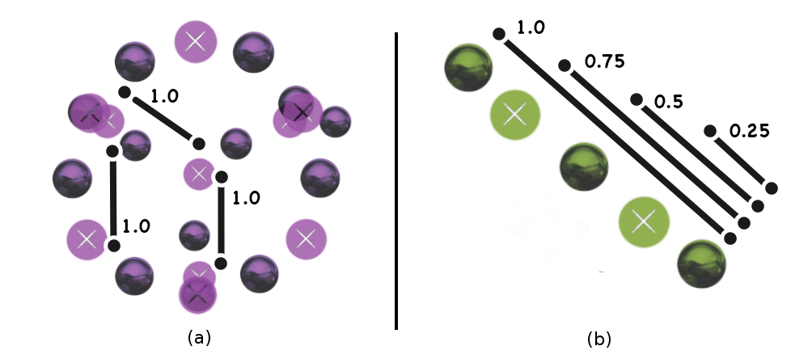

Classification of Clusters
in MD simulations of
Collision Cascades
Utkarsh Bhardwaja, Andrea E. Sandb and Manoj Warriera
| a Bhabha Atomic Research Centre, Vizag, India; | b University of Helsinki, Finland
Who am I?
I am a researcher at the Bhabha Atomic Research Centre, Vizag, India
My masters was in Computer Science and Engg. with specialisation in Nuclear Engg.
Earlier, I've worked as research engg. in Aspiring Minds in a team lead by Varun Aggarwal (MIT grad. in ML). I worked on research and development of a software to evaluate programming codes using ML which has served thousands of end-users.
I currently work on applying computational and ML techniques to computational physics problems under the guidance of Manoj Warrier (Ph.D. University of Greifswald, Germany).
A Collision Cascade
Clusters
IN CASCADES
Cluster Shapes Matter
- Decide diffusion (sessile / glissile)
- Capture and Recombination properties
- Thermal stability
The higher scale models can use the distribution of different cluster classes along with their properties as inputs.
In terms of the development of models to describe the evolution of radiation damage and its role in irradiation-induced changes in material properties, the important parameters are not only the total number of Frenkel defects per cascade but also the distribution of their population in clusters and the form and mobility of these clusters.D.J. Bacon, F. Gao, Y.N. Osetsky, J. Nucl. Mater., 276 (1–3) (2000), pp. 1-12 ---
Motivation
Now that we can have big databases of collision cascades can we use the data itself to systematically find different classes of clusters and get insights into each of the morphologies. Can we do the following:- If we look at an interesting cluster in a cascade, can we ask which other cascades have similar clusters and how do they look.
- and can this query be fast for a big database of collision cascades & clusters.
- Can we derive from data what all shapes are possible for different elements and energies
- and how the different classes of morphologies relate to each other.
Methods Overview
Defect Identification
Motivation / Goals
- Find and mark psuedo defects
- Only final coordinates as inputs: no assumptions or ambiguous inputs
- Space efficient: Does not need to have whole initial lattice in the memory
- Fast: Can be implemented as O(N), N being number of atoms
- Simple implementation: no specialized datastructures like kd-trees used
http://arxiv.org/abs/1811.10923
Related alogrithms: Sphere threshold based methods and Wigner-Seitz.
Algorithm
- Calculation of closest lattice site
- Find Modulus of coordinates by lattice constant to find closest lattice site in the first unit cell.
- Find cell in which an atom is present by finding ceiling of quotient when coordinates are divided by lattice constant.
- Assign a number to each atom based on the ordering of lattice sites.
- Enumeration
- If an atom is associated with a lattice site that is already marked by another atom, label all the associated atoms as interstitials and lattice site as vacancy. Also, label the vacancy and closest interstitial to it among all associated ones as pseudo.
- Label the lattice sites not associated with any atom as vacancy.
Grouping defects into Clusters
Feature Vector to Characterize Cluster Shapes
Motivation
- Characterize cluster shapes in some qualitative sense
- Local saliency but should include some sense of global shape
- Gloss over small details, strong robustness to noise
- Invariant to transformations (rotations, translations, scaling etc.)
- Fast similarity search in a large database
Motivation - Angles
Motivation - Distances
Distance Measures
- Euclidean
- KL Divergence
- Cosine
- Quadratic Form Distance Functions
Some Typical Feature Vectors
Other Features
- Shape distance measures sensitive to noise, examples include Hausdorff distance, closest points search etc.
- Shape Context method global feature, comparison of complete shapes, sensitive to noise inherent in our data
- Saliency features from point-cloud applications targetted for large number of points specially surface points
- Graph CNN, deep learning methods require labelling, less points per cluster and less data can affect accuracy
Visualizing Similarities Between All The Clusters At Once
Using neighbour graph dimensionality reduction techniques like t-SNE and UMAPSimilarity based dimensionality reduction - TSNE
Classification
- UMAP for dimensionality reduction
- HDBSCAN for clustering

Properties of Classes
Sizes
Dimensionality
Distribution Across Elements & Energies
More Properties To Look At
- Distribution across different angles of PKA launch
- Dislocation loops, diffusion properties, stability etc.
- Distribution across cascades with and without subcascades
Concluding Remarks
- The classification gives a way to systematically study the zoo of defect clusters formed in primary damage due to irradiation.
- Since the classification is all automated, it can be applied to large databases of simulations of new materials
- The same approach, with possibly different feature vector, can be extended to find structures and classes in subcascades and cascades themselves.
THE END
Download Csaransh and give it a try on your data (https://github.com/haptork/csaransh/)
Discuss the results, get back with suggestions, feedback and code at github repository. We are open for collaboration.
Have a look at the paper describing each step in more details and to find references to related topics discussed. (http://arxiv.org/abs/1811.10923)
You can check the links to some cool ML algorithms the project uses: